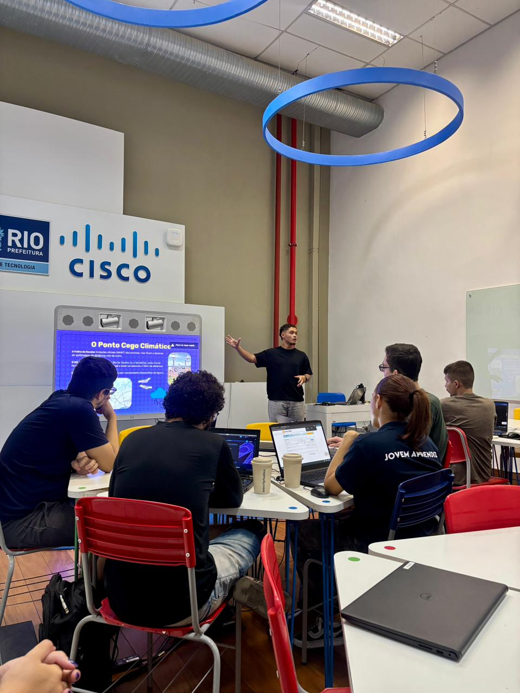

Gustavo Freitas
@frtgusta · May 2026
Taught a class on IoT, covering how to develop projects with microcontrollers and sensors using MQTT telemetry. What an honor to deliver my first lecture! 🚀
The meeting took place at the Encriptades project, held by Instituto da Hora at Nave do Conhecimento (Engenhão). I've always believed in the transformative power of education, but being able to contribute directly to the development of others was an indescribably rewarding experience.
